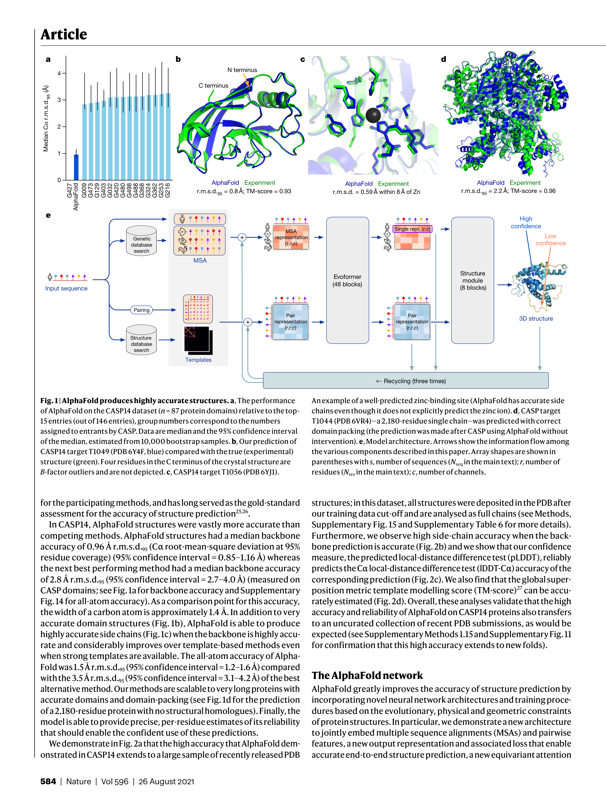

저자: John Jumper, Richard Evans, Alexander Pritzel, Tim Green, Michael Figurnov, Olaf Ronneberger, Kathryn Tunyasuvunakool, Russ Bates, Augustin Zidek, Anna Potapenko, Alex Bridgland, Clemens Meyer, Simon A. A. Kohl, Andrew J. Ballard, Andrew Cowie, Bernardino Romera-Paredes, Stanislav Nikolov, Rishub Jain, Jonas Adler, Trevor Back, Stig Petersen, David Reiman, Ellen Clancy, Michal Zielinski, Martin Steinegger, Michalina Pacholska, Tamas Berghammer, Sebastian Bodenstein, David Silver, Oriol Vinyals, Andrew W. Senior, Koray Kavukcuoglu, Pushmeet Kohli, Demis Hassabis | 날짜: 2021 | Journal: Nature | DOI: 10.1038/s41586-021-03819-2

Figure 1
AlphaFold는 아미노산 서열만으로 단백질 3D 구조를 원자 수준 정확도로 예측하는 최초의 computational method이다. CASP14에서 median backbone accuracy 0.96 A r.m.s.d.95를 달성하여, 차순위 방법(2.8 A)을 압도적으로 능가했으며, 이는 탄소 원자 폭(~1.4 A)에 근접하는 실험적 구조 수준의 정확도이다.
| 항목 | 점수 |
|---|---|
| Novelty | 5/5 |
| Technical Soundness | 5/5 |
| Significance | 5/5 |
| Clarity | 4/5 |
| Overall | 5/5 |
총평: 50년 이상 미해결이었던 protein structure prediction 문제를 사실상 해결한 획기적 연구로, Evoformer와 IPA라는 독창적 architecture 혁신을 통해 실험적 정확도에 필적하는 성능을 달성했다. AI for Science 분야의 가장 대표적인 성공 사례이자, 구조생물학의 패러다임을 근본적으로 전환시킨 milestone 논문이다.